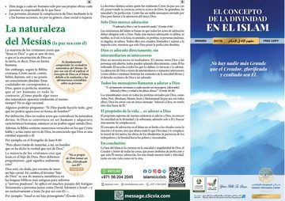

La alta moralidad
¿Qué es el Islam? El milagro de la embriología en el Corán y la alta moralidad del Profeta ﷺ.


Folletos para imprimir
 Sonrisa y compasión
Sonrisa y compasiónEspañol
 La mujer en el Islam
La mujer en el IslamEspañol
 Introducción al Islam: un estilo de vida práctico y equilibrado
Introducción al Islam: un estilo de vida práctico y equilibradoEspañol
 El Profeta Muhammad: ¡debes conocer a este hombre!
El Profeta Muhammad: ¡debes conocer a este hombre!Español
 Jesús: un profeta de Dios
Jesús: un profeta de DiosEspañol

El concepto de la Divinidad en el IslamEspañol
 El Corán: la revelación final a la humanidad
El Corán: la revelación final a la humanidadEspañol
 ¿Cuál es el propósito de la vida?
¿Cuál es el propósito de la vida?Español
 Conceptos erróneos sobre el Islam
Conceptos erróneos sobre el IslamEspañol
 Los derechos de las mujeres en el Islam
Los derechos de las mujeres en el IslamEspañol
 Los milagros científicos del Corán
Los milagros científicos del CoránEspañol
 La muerte y el más allá
La muerte y el más alláEspañol